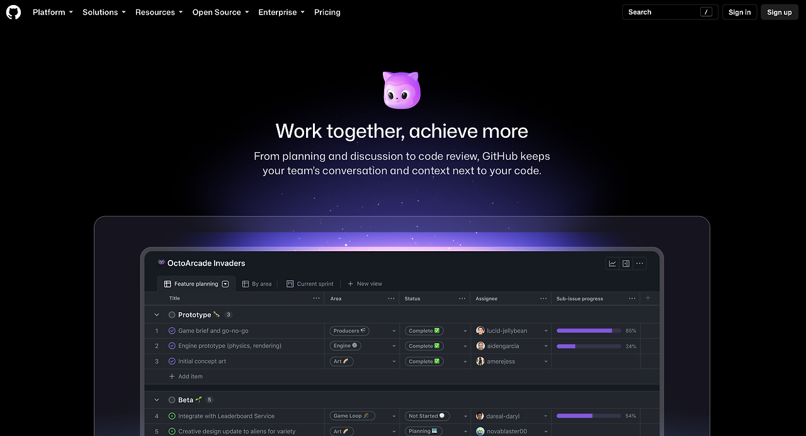
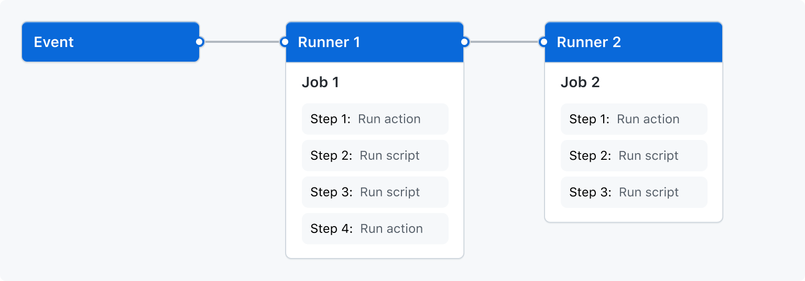

안녕하세요. dev.log입니다.
로컬에는 코드가 남아 있는데 Pull Request 검토도, 자동 빌드도, 배포도 되지 않는 날이 있습니다. GitHub가 멈추면 저장소와 함께 팀의 협업 절차도 멈춥니다. GitHub는 Git 저장소 위에 리뷰, 이슈, 자동화와 릴리스를 얹은 개발 작업 공간이기 때문입니다.
2026년 8월 17일 GitHub.com 장애는 7시간 47분 이어졌습니다. GitHub의 공식 장애 보고서에 기록된 최대 오류율은 웹·API 약 20%, 아카이브·Raw 콘텐츠 다운로드 약 50%였습니다. Issues, Pull Requests, API, Actions와 인증 관련 기능이 함께 영향을 받았습니다.
대응의 첫 단추는 GitHub가 약 8시간 멈춰도 계속되어야 할 일을 정하고, 그 일을 코드·협업 기록·자동화·프로젝트 입구로 나눠 보는 것입니다.

7시간 47분 장애가 드러낸 실제 의존성
Git은 파일과 변경 이력을 다루는 분산 버전 관리 시스템입니다. GitHub는 여기에 사람과 절차를 연결하는 포지(forge)입니다. 포지는 Git 저장소에 코드 리뷰, 작업 추적, 자동 검사와 배포 자산을 더해 한 서비스에 모읍니다.
장애 중에도 개발자는 로컬 브랜치에서 코드를 고치고 커밋할 수 있습니다. 팀 업무는 다른 지점에서 막힙니다. 변경을 합의할 Pull Request가 열리지 않고, Issue의 우선순위를 확인하지 못하며, Actions job이 시작되지 않으면 코드는 있어도 다음 단계로 넘어갈 수 없습니다.
이 차이는 백업 대상을 바꿉니다. 저장소 사본은 출발점이지만 팀이 내린 결정과 출시 경로까지 자동으로 담아 주지는 않습니다.
Git 저장소 사본으로 복구되는 범위
Git 공식 문서는 분산 버전 관리의 clone이 저장소 전체와 이력을 미러링한다고 설명합니다. 다른 remote를 추가할 수도 있습니다. 코드와 일반 Git 이력은 비교적 옮기기 쉬운 자산입니다.
커밋에는 코드 변경이, Pull Request에는 변경을 둘러싼 대화와 검증이 남습니다. GitHub Pull Request 문서를 보면 설명, 댓글, 리뷰, 자동 검사 결과와 활동 기록이 한 화면에 묶입니다. Issues와 Projects에는 할 일, 담당자, 상태와 업무 의존 관계가 남습니다. 이 정보는 git clone --mirror에 포함되지 않습니다.
GitHub의 마이그레이션 계획 문서도 현재 소스, 소스와 이력, 소스·이력·메타데이터를 서로 다른 이전 범위로 구분합니다. 여기서 메타데이터는 Issues, Pull Requests와 설정 같은 협업 기록입니다. 코드가 복제됐다는 사실과 프로젝트가 복구됐다는 판단을 같은 말로 써서는 안 되는 이유입니다.
GitHub 의존성을 네 층으로 나누기
장애 대응 목록은 기능 이름보다 업무 산출물에서 시작하는 편이 쉽습니다. 아래 표로 코드 미러만으로 복구할 수 있는 업무를 가려낼 수 있습니다.
| 의존성 층 | GitHub에 남는 것 | 코드 미러로 복구 | 최소 대체 경로 |
|---|---|---|---|
| 코드와 Git 이력 | branch, tag, commit | 대부분 가능 | 독립 remote와 실제 복원 연습 |
| 협업 기록 | Pull Request, Issue, review, Project 상태 | 불가능 | 중요한 결정은 ADR·runbook으로 저장소에도 기록하고 메타데이터를 주기적으로 보존 |
| 자동화와 릴리스 | Actions run, 배포 승인, Release note·asset | 불가능 | 저장소에서 실행할 수 있는 build·test·release 명령과 긴급 배포 절차 |
| 입구와 정체성 | 계정, 권한, SSO, 공개 URL, Star와 발견 경로 | 불가능 | 외부 상태 연락망, 문서 사이트와 필요할 때 사용할 읽기 전용 mirror |
첫째 줄은 가장 쉽게 복제됩니다. 나머지 세 줄은 플랫폼의 데이터 모델과 운영 제어면에 더 깊게 묶입니다. 특히 공개 오픈소스라면 GitHub URL과 기존 계정이 기여의 입구 역할을 하므로 기능만 같은 다른 포지를 고른다고 비용이 사라지지 않습니다.
모든 층을 이중화할 필요는 없습니다. 팀마다 GitHub가 8시간 멈춰도 계속되어야 하는 업무 하나를 먼저 적으면 됩니다. 긴급 수정 배포가 답이라면 자동화와 릴리스부터 봅니다. 다음 스프린트 계획이라면 Issue export는 하루 늦어져도 괜찮을 수 있습니다.
자체 호스팅 러너에 남는 GitHub 의존성
GitHub Actions의 공식 구조는 저장소 이벤트가 워크플로를 시작하고, 워크플로의 작업을 러너가 실행하는 순서입니다. YAML 파일은 .github/workflows에 남아도 이벤트 접수와 작업 배정은 GitHub Actions가 맡습니다.

자체 호스팅 러너를 쓰면 CPU, 운영체제와 네트워크는 팀이 통제합니다. 러너 장비를 보유해도 워크플로의 시작과 작업 배정은 GitHub에 남습니다. 공식 구조에서 도출한 운영상 판단이며, 모든 장애에서 자체 러너가 반드시 멈춘다고 단정할 수는 없습니다.
긴급 릴리스가 꼭 필요하다면 Actions 화면 없이도 실행할 수 있는 최소 명령을 저장소에 남겨야 합니다. build와 test를 로컬 또는 별도 CI에서 재현하고, 생성물의 checksum을 확인한 뒤, 제한된 권한으로 배포하는 절차입니다. 평소 파이프라인 전체를 복제하기보다 가장 작은 안전한 릴리스 경로부터 준비하는 편이 유지 비용을 줄입니다.
GitHub Releases는 Git tag를 기반으로 하지만 release note와 binary asset을 별도 객체로 묶습니다. tag가 mirror에 남아도 설치 파일과 배포 설명이 같은 곳에 남는다고 가정하면 안 됩니다. 외부 패키지 저장소를 이미 쓴다면 그 경로에서 다시 받을 수 있는지 확인하고, GitHub Release만 쓴다면 자산과 checksum의 보존 위치를 정해야 합니다.
GitHub 유지와 이전을 가르는 세 질문
GitHub를 계속 쓰는 결정도 충분히 합리적입니다. 익숙한 Pull Request 흐름, 권한 체계, Actions 생태계와 공개 프로젝트의 발견 가능성을 다른 곳에서 다시 만드는 비용이 더 클 수 있습니다. 결정은 서비스 선호보다 아래 세 질문에서 갈립니다.
- GitHub가 약 8시간 멈추면 어떤 업무가 실제로 중단되나요? 리뷰 지연은 기다릴 수 있어도 긴급 배포 중단은 서비스 복구를 늦출 수 있습니다.
- 그 업무의 입력과 결정 기록을 GitHub 밖에서 다시 만들 수 있나요? 승인 이유, 운영 절차와 릴리스 자산까지 확인합니다.
- 대체 경로를 최근에 끝까지 실행해 봤나요? mirror를 만드는 명령이 있어도 새 remote에서 clone, build와 release까지 끝내 봐야 복구 경로가 됩니다.
세 답이 모두 분명하면 당장 플랫폼을 옮길 이유는 줄어듭니다. 답하기 어려운 항목이 있다면 그 층만 먼저 분리하면 됩니다. GitHub를 유일한 코드 저장소, 유일한 의사결정 기록, 유일한 빌드와 배포 경로로 동시에 두지 않는 것부터 시작해 보세요.